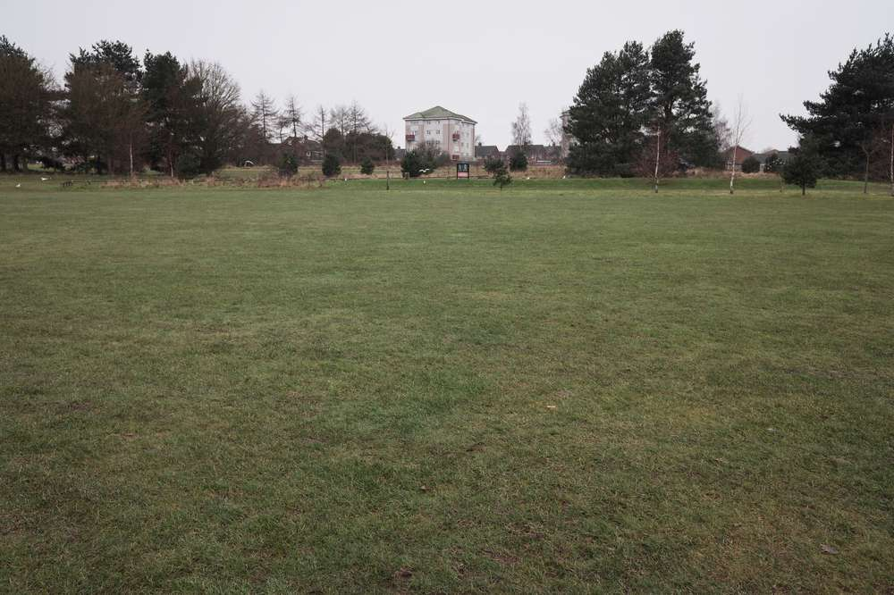
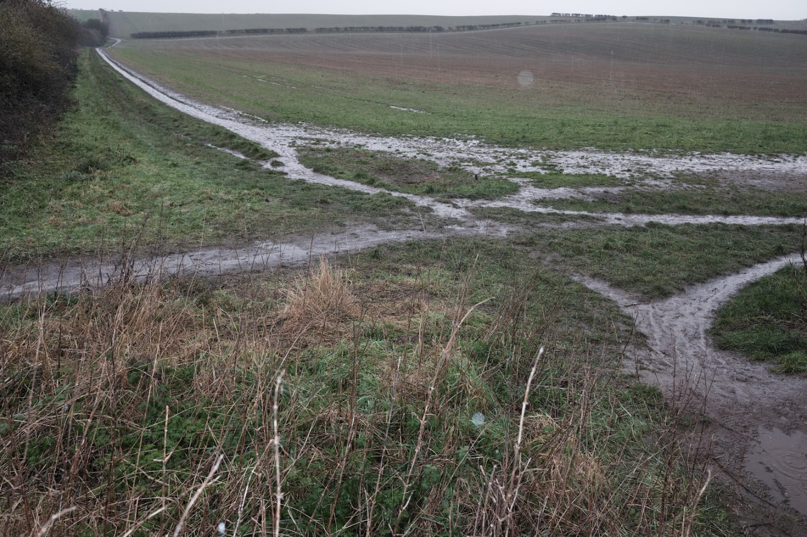
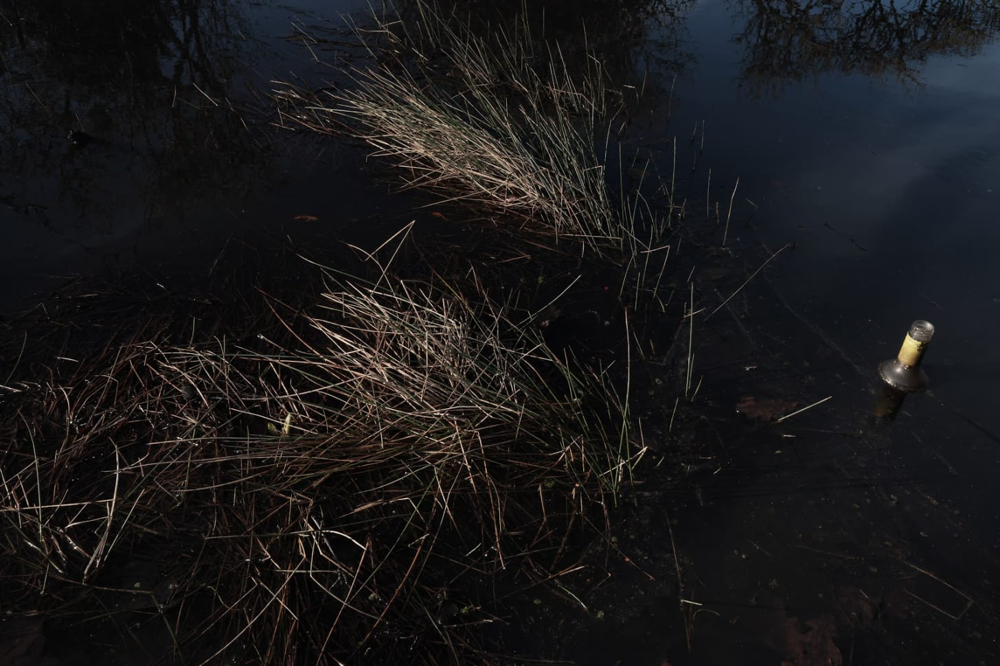
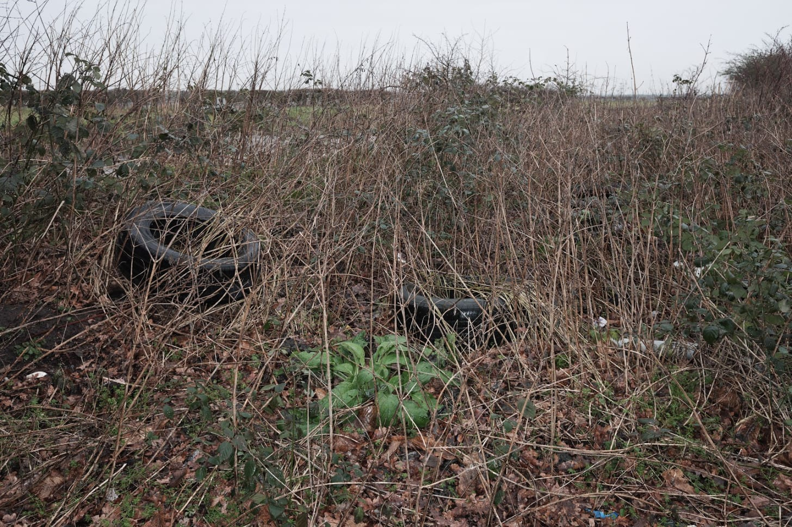
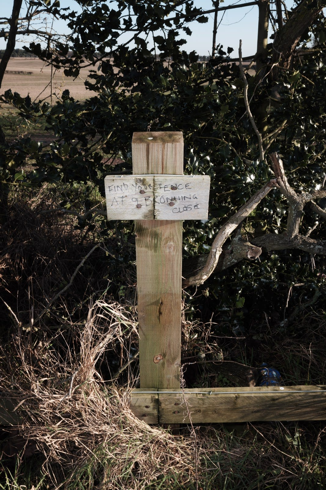
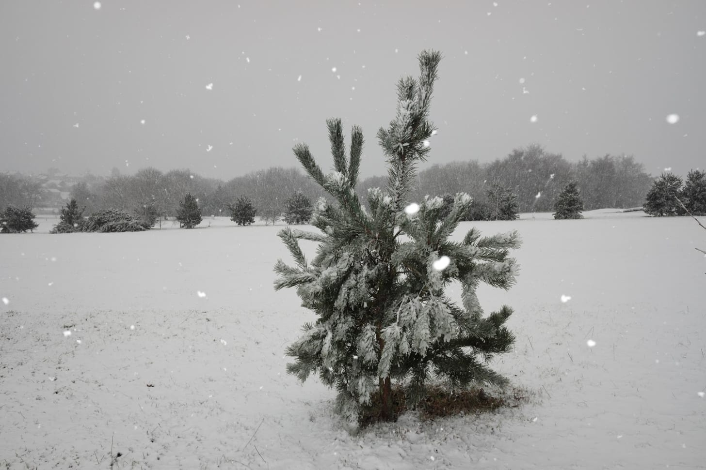
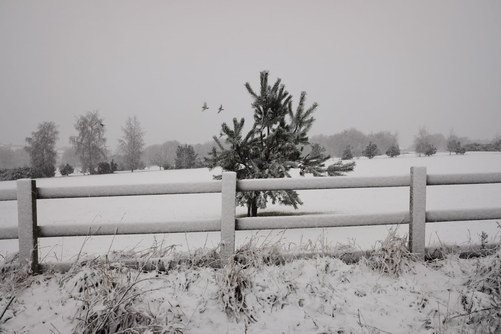

Rich's digital garden
Eighteen holes under national lockdown
Restrictions from the 4th of January 2021 have left the golf course devoid of the intended user, replaced by users like myself walking their dogs. The absence of golf paraphernalia, buggies, clubs and flags, leave the space in a contradictory vacuum, a vacancy that contradicts the well-maintained greens and shrubs. Navigating the pandemic golf course, a landscape of contrived nature shaped and manicured for a prohibited game, is to walk through a hyperbolic green artifice reminiscent of gaudy open spaces at amusement parks albeit without any clear navigational paths.
{kind=link}
 Despite the contradictory experience caused by the pandemic, it is still an urban environment that is banal and ordinary with its peripheral spaces dotted with contemporary artefacts. An abandoned blue bag of rubbish, a humorous graffiti about the missing fence boundary, and tires presumably fly-tipped into the golf course boundary. Even the course ponds, like inner-city waterways, can’t escape beer bottles. Additionally, the peripheral is a site of desire paths, organic and unofficial pathways away from the managed greens crisscrossing out into the surrounding countryside. Shimming in the morning rain, these desire paths appear well used and waterlogged.
Despite the contradictory experience caused by the pandemic, it is still an urban environment that is banal and ordinary with its peripheral spaces dotted with contemporary artefacts. An abandoned blue bag of rubbish, a humorous graffiti about the missing fence boundary, and tires presumably fly-tipped into the golf course boundary. Even the course ponds, like inner-city waterways, can’t escape beer bottles. Additionally, the peripheral is a site of desire paths, organic and unofficial pathways away from the managed greens crisscrossing out into the surrounding countryside. Shimming in the morning rain, these desire paths appear well used and waterlogged.
A blanketing of snow hides the peripheral litter and spaghetti junction desire paths, enhancing the banality of the landscape and giving focus to the non-native coniferous trees. Nottinghamshire, as a region is associated with Sherwood and its oak rather than the present blue spruce trees which seem at home in the snow, far-removed from the golf course in some deceptive Caledonian landscape.
{kind=link}
{kind=link}
{kind=link}
{kind=link}
The golf course is a welcome variation on urban open spaces. While most edgeland sites are either (1) forgotten unmanaged margins or (2) managed by practical utilitarian specification, here the landscape is managed for leisure which contradictory or not during the pandemic restrictions, is a valuable resource to escape less open urban spaces.
{kind=link}
{kind=link}
Reading
As the underpinning concept of this newsletter, I’m increasingly interested in the idea of the pandemic/lockdown dériviant subverting restrictions for local overlooked urban spaces for local tourism.
- Latourex.org experimental travel
Other things of note
This article is from my newsletter. Consider subscribing, it's free and weekly.
Created
17/01/2021
Topics
Roadside Picnic
Pandemic
Psychogeography
Urban Spaces